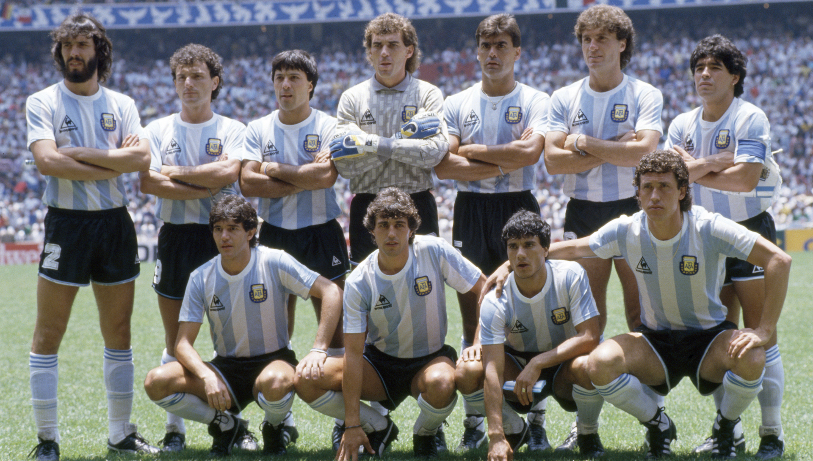

Argentina Campeón 1978
Argentina Campeón 1986
| Mundiales | Ronda |
|---|---|
| Uruguay 1930 | Subcampeón |
| Italia 1934 | Octavos de final |
| Francia 1938 | No participó |
| Brasil 1950 | No participó |
| Suiza 1954 | No participó |
| Suecia 1958 | Fase de grupos |
| Chile 1962 | Fase de grupos |
| Inglaterra 1966 | Cuartos de final |
| México 1970 | No clasificó |
| Alemania 1974 | Fase de grupos |
| Argentina 1978 | Campeón |
| España 1982 | Fase de grupos |
| México 1986 | Campeón |
| Italia 1990 | Subcampeón |
| Estados Unidos 1994 | Octavos de final |
| Francia 1998 | Cuartos de final |
| Corea-Japón 2002 | Fase de grupos |
| Alemania 2006 | Cuartos de final |
| Sudáfrica 2010 | Cuartos de final |
| Brasil 2014 | Subcampeón |
| Rusia 2018 | Octavos de final |